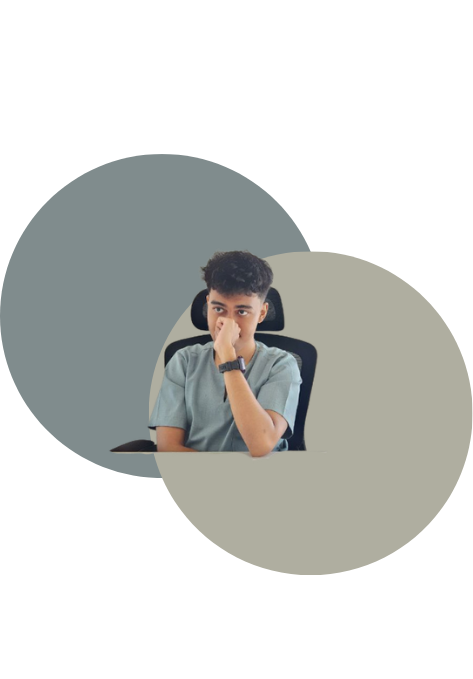

Poster
Poster & print layouts
Academic briefs & campaign-style exercises
Strong hierarchy and typographic rhythm for events and messaging — built for both screen previews and print-ready export.
Graphic & digital design
Visual design for screens, print, and products — from layout and campaigns to web UI and 3D.
B.Sc. (Hons.) Multimedia Computing · Universiti Teknologi MARA
I combine design craft with a computing background: clear typography, structured layouts, and thoughtful UI. Looking for a graphic design role where I can shape brand touchpoints and ship polished creative work.

Portfolio
Campaigns, websites, infographics, 3D, posters, and apparel — including OMAF and Kilang Sublimation web concepts, KTSTAY infographic work, Sampul Raya and jersey graphics. Click any thumbnail for a full preview; close with ×, the backdrop, or Escape.
Poster & print layouts
Academic briefs & campaign-style exercises
Strong hierarchy and typographic rhythm for events and messaging — built for both screen previews and print-ready export.
Sampul Raya banner
Seasonal / festive visual
A wide-format banner treatment with clear focal hierarchy suited for social cover and display placements.
KTSTAY & data-forward layouts
Information graphics brief
Charts, icons, and grid structure that make dense facts easier to scan without losing brand tone.
Web UI concepts
Kilang Sublimation · OMAF
Page structure, hero treatments, and component rhythm explored as visual comps for service-led sites.
Kilang Sublimation web concept
Product / manufacturing context
Landing-style layouts emphasizing offerings and trust cues for online enquiries.
OMAF site visuals
Organization / event-facing UI
Multiple states and sections showing navigation, content blocks, and consistent UI patterns.
Blender object & scene work
Personal / coursework renders
Hard-surface modeling and lighting studies aimed at believable materials and clean presentation shots.
Jersey & apparel graphics
BUMIHAYAT Industries — branded apparel
Vector-ready marks and shirt mockups tuned for screen printing and consistent identity on garments.
Profile
Graphic & digital designer · Multimedia computing graduate — pairing craft with clear delivery.
Design that respects hierarchy, grid, and audience — whether it’s a landing page, a poster wall, or a jersey graphic.
Bachelor of Computer Science (Hons.) in Multimedia Computing and a Diploma in Computer Science from Universiti Teknologi MARA (UiTM) — comfortable across graphic design, web UI, video, 3D, and data-informed work. I like projects where visual craft meets clear digital delivery.
Currently designing for OMAF Apparel. Open to full-time graphic design roles and select freelance work.
Contact
Available for full-time graphic design roles and relevant freelance. Send a message by email — I’ll respond as soon as I can.
Based in Terengganu, Malaysia
Email amir.inbox720@gmail.com

{kind=link}
{kind=link}
{kind=link}
{kind=link}
{kind=link}
{kind=link}
{kind=link}
{kind=link}
{kind=link}
{kind=link}
{kind=link}
{kind=link}
{kind=link}
{kind=link}
{kind=link}
{kind=link}
{kind=link}
{kind=link}
{kind=link}
{kind=link}
{kind=link}
{kind=link}
{kind=link}
{kind=link}
{kind=link}
{kind=link}
{kind=link}
{kind=link}
{kind=link}